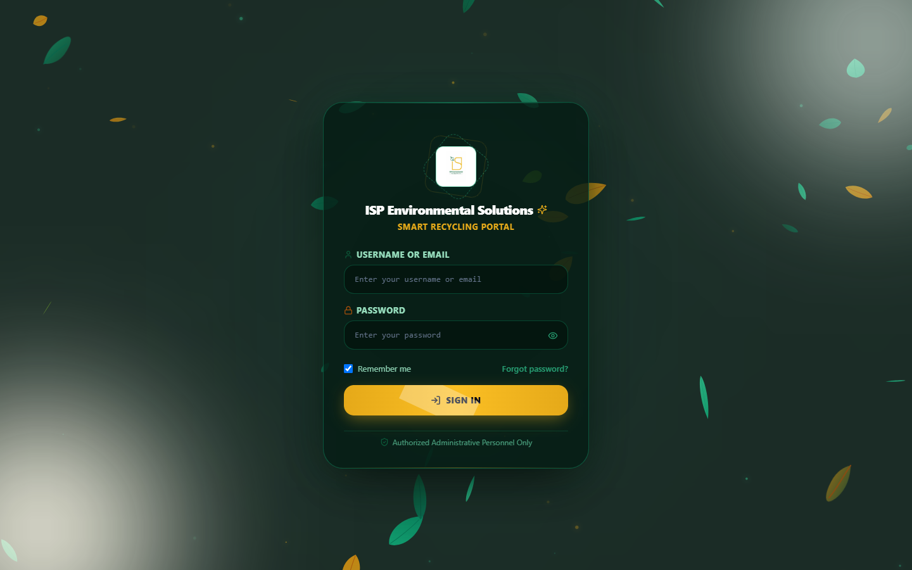
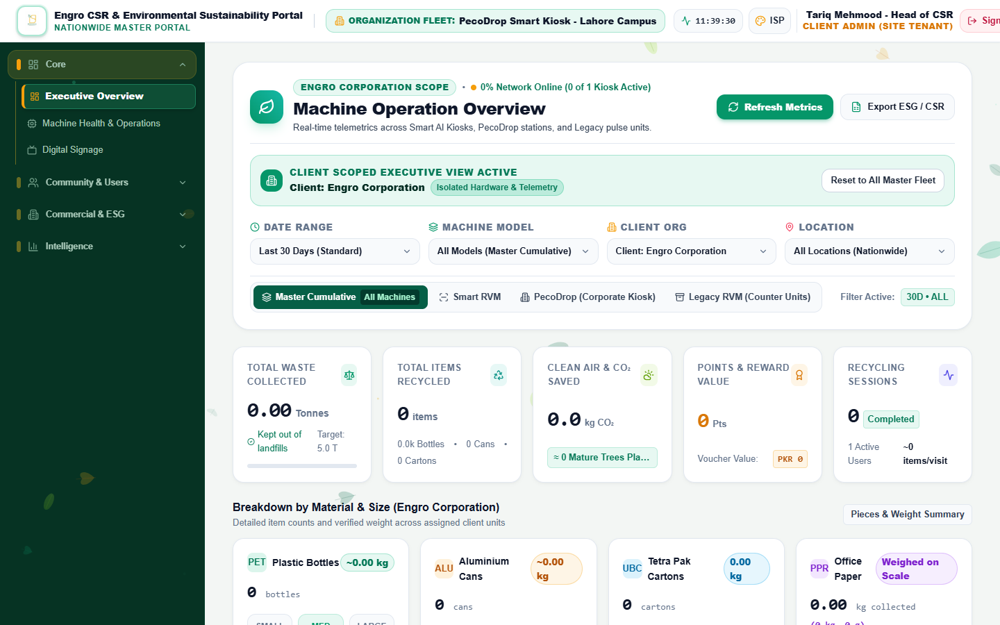
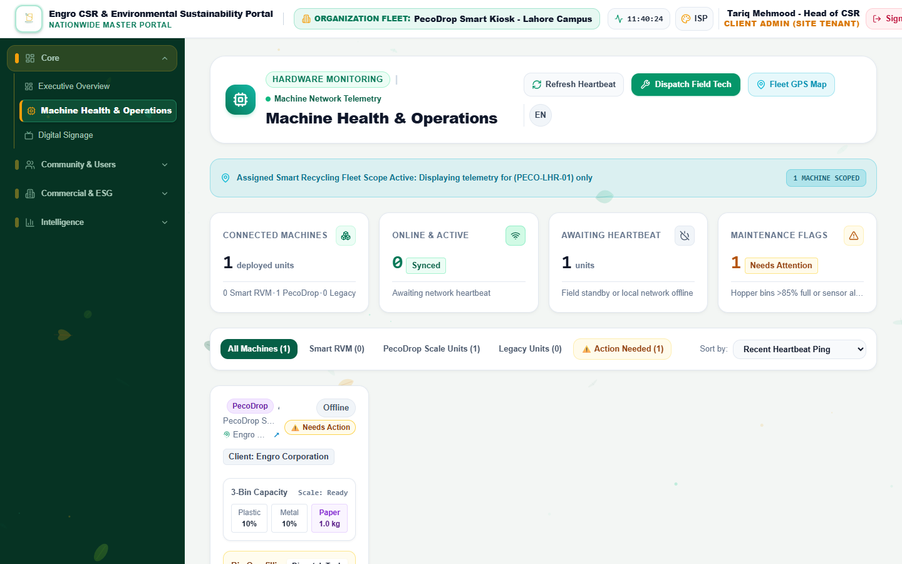
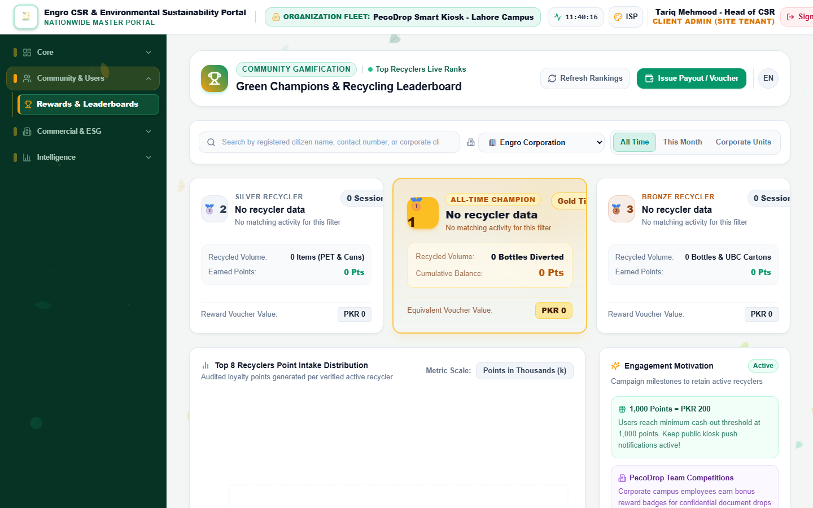
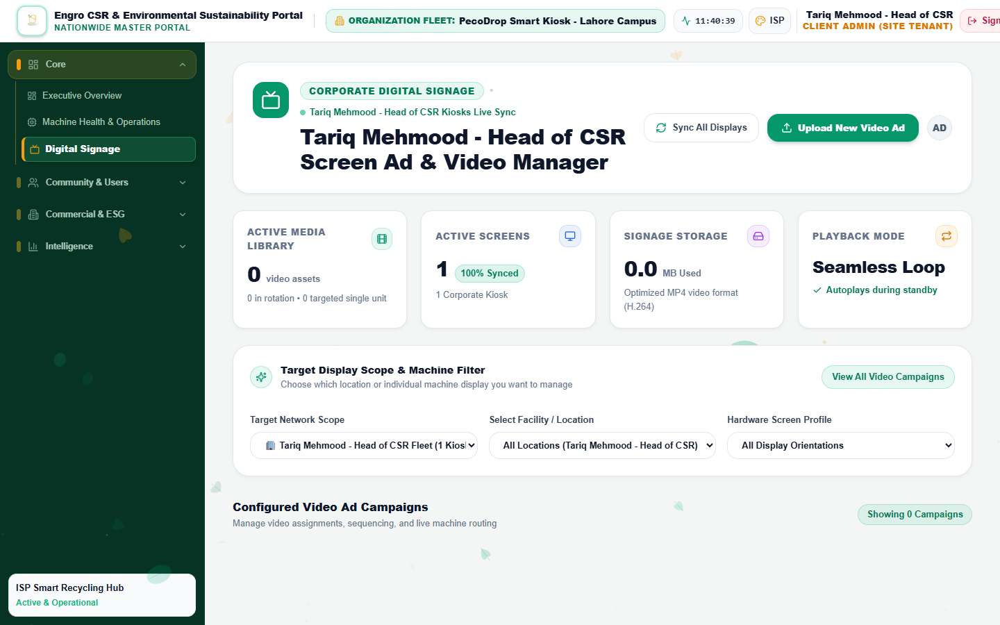
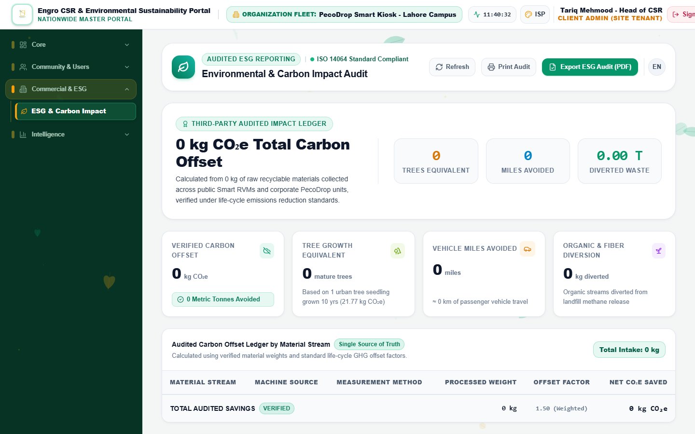
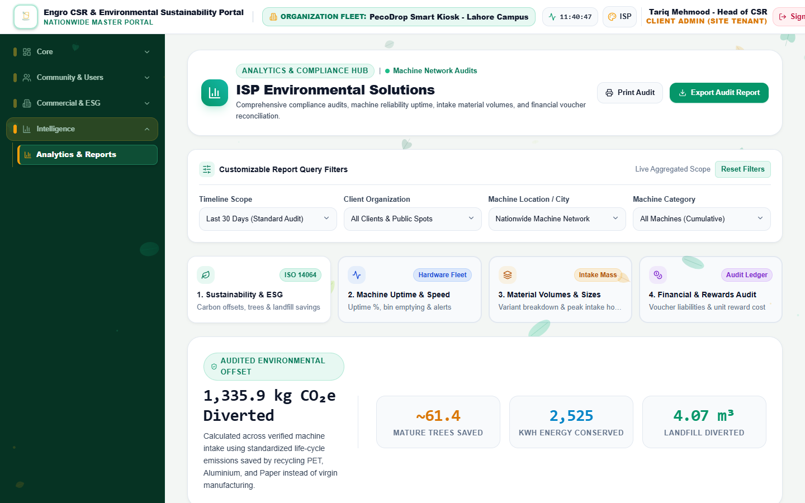

ISP Environmental Solutions Pvt. Ltd.
PecoDrop Enterprise Programme • Client Documentation
Corporate Client Dashboard Guide
Your organization's Sustainability Portal: how to sign in, read your recycling and ESG figures, monitor your PecoDrop kiosks, manage digital signage, recognise your top recyclers, onboard employees and get support.
Portal: https://isprvm.binishaqsoft.com
Kiosk: PecoDrop enterprise recycling kiosk (⭕ plastic bottles, 🔺 cans, 🟦 office paper)
Employee app: Trash to Cash (Android)
For: the Corporate Client Administrator (CSR / ESG / facilities lead) and any Corporate Sub-Users your administrator creates.
Edition: 17 October 2026. Screenshots show a sample organization on a development copy of the portal; your portal carries your own name, logo and colours.
1. Welcome: what the portal gives you
Every PecoDrop kiosk installed on your premises reports each deposit to ISP's Master Portal in real time. Your organization receives its own branded view of that data: live kiosk status, how much plastic, aluminium and paper your people have diverted, the resulting carbon offset, a leaderboard of your top recyclers, the ability to run your own video campaigns on the kiosk screens, and exportable reports for CSR and ESG disclosures. All figures are limited to your organization; you never see other clients' data and they never see yours.
2. Signing in
- Open https://isprvm.binishaqsoft.com in Chrome, Edge or Safari (desktop or tablet). You can install it as an app from the browser menu ("RVM Master").
- Enter the Username or Email and Password issued to you by ISP, keep Remember me ticked on a trusted device, and press Sign In.
- Your session lasts 24 hours. Use Sign Out in the top bar on shared computers.
- Passwords must be at least 8 characters. There is no self-service reset: contact ISP support to have your password changed ("Forgot password? – Please contact system administrator to reset credentials").

Figure 1 – Login card.
3. Your portal at a glance

Figure 2 – Landing page for a client administrator: the top bar shows the organization's dashboard title and "ORGANIZATION FLEET: …", and the banner "CLIENT SCOPED EXECUTIVE VIEW ACTIVE – Client: <your organization>".
- Branding. The top bar shows your dashboard title (default "<Organization> Sustainability Portal"), your logo and your welcome message; the colour theme is the one ISP configured for you.
- Fleet label. "Organization Fleet:" lists the kiosks bound to your organization (sub-users see "Assigned Kiosks:" with their delegated kiosks).
- Menu. Client administrators see: Executive Overview, Machine Health & Operations, Digital Signage, Rewards & Leaderboards, ESG & Carbon Impact and Analytics & Reports. Depending on the services ISP has enabled for your account you may also see Manual Intake Desk, Recycler Activity (your staff directory) and Access & Security (RBAC) (sub-user management).
- Themes. The palette button in the top bar lets you switch between the six colour themes for your own browser.
4. Executive Overview
Figure 3 – Executive Overview scoped to your organization.
- Filters: Date Range (Today, Yesterday, Last 7 Days, Last 30 Days – default, This Month, All Time), Machine Model, Location. The Client Org selector is locked to your organization.
- KPI tiles: Total Waste Collected (tonnes), Total Items Recycled, Clean Air & CO₂ Saved (kg), Points & Reward Value (with the PKR voucher value at PKR 0.20 per point), Recycling Sessions.
- Material cards: Plastic Bottles (Small / Medium / Large), Aluminium Cans, Tetra Pak Cartons (public RVM only) and Office Paper (kg; Light <100 g, File 100–499 g, Bulk ≥500 g; PecoDrop).
- Charts and lists: daily deposit trend, waste share, kiosk status, recent sessions, live alerts (for example a full bin).
- Export ESG / CSR: "Export Sustainability Report" as an Executive PDF (print) or an Excel / CSV file. Data refreshes every 30 seconds; Refresh Metrics forces an update.
5. Machine Health & Operations

Figure 4 – "Assigned Smart Recycling Fleet Scope Active": only your kiosks are listed.
- Each kiosk card shows its status pill (Online, In Session, Bin Full, Fault or Offline), the 3-Bin Capacity for plastic, metal and paper, counters for sessions, bottles, cans, paper and points issued, the last heartbeat and the installation location ("View GPS on Google Maps").
- A kiosk is Online when it has reported within the last 60 seconds. A bin warning appears when plastic or metal fill reaches 85 %, paper reaches 12 kg, or the kiosk itself reports Bin Full. Arrange for your facilities team to empty the bin; the warning clears with the next report.
- Edit Machine Configuration on a kiosk card lets you adjust that kiosk's points per item (section 12). Registering new kiosks and moving kiosks between organizations is done by ISP.
- The Machine Maintenance & Emptying History table and Export Service Log (CSV) record bin events for your kiosks.
6. Rewards & Leaderboards

Figure 5 – "Green Champions & Recycling Leaderboard" for your organization (empty on the sample system).
- The podium and table rank your employees by points earned, with sessions, bottles, cans / cartons, points and voucher value. Switch between all time and this month, and search by name.
- Issue Payout / Voucher: as a client administrator you can record a reward for an employee against their points balance: EasyPaisa Wallet, JazzCash Wallet, Mobile Airtime Top-Up, Retail Merchant E-Voucher or Raast Instant Pay, with presets of PKR 500 / 1,000 / 2,500 / 5,000 or a custom amount (5 points = PKR 1). The portal deducts the points and records a reference code; the actual transfer or voucher is arranged by your organization or ISP according to your programme agreement. Grants without point deduction ("overdraft") are reserved for ISP.
- Broadcast Notification records a campaign message for your employees; delivery channels are activated by ISP on request.
7. Digital Signage

Figure 6 – "Corporate Digital Signage" with your campaign library (empty on the sample system).
- Press Upload New Video Ad. Enter a Campaign Title, choose the Hardware Category (PecoDrop Exclusive or Campus Specific) and the Screen Profile 16:9 Landscape (PecoDrop).
- Choose the target: all your PecoDrop kiosks or specific kiosks.
- Select the video file: MP4 (H.264) or WebM, 1920×1080 landscape, ideally under 50 MB (maximum 250 MB), or paste a public video URL.
- Upload, then press Push to Screen(s) on the campaign card. Your kiosks download the video within about 15 seconds and loop it on the signage display; Change Machines edits the destinations; delete removes it from the screens.
You only see and manage campaigns created for your organization. ISP's network-wide campaigns may also be shown on your kiosks as agreed in your contract.
8. ESG & Carbon Impact

Figure 7 – "Environmental & Carbon Impact Audit" scoped to your organization.
- KPIs: Verified Carbon Offset (kg CO₂e), Tree Growth Equivalent (kg ÷ 21.77), Vehicle Miles Avoided (kg ÷ 0.40), Organic & Fiber Diversion.
- The "Audited Carbon Offset Ledger by Material Stream" lists each material with its processed weight, the offset factor and the net CO₂e saved. Standard factors: plastic 1.50, aluminium 9.10, paper 2.90, tetra / cardboard 3.10 kg CO₂e per kg; bottle 0.025 kg and can 0.015 kg average weight; paper is weighed by the kiosk. You may enter your own factors (per browser) and use Reset Standards to restore the defaults.
- Export ESG Audit (PDF) opens the "ISO 14064 Compliance Certificate" dialog: Verified PDF Report (print) or CSV Data Ledger. ISP can additionally issue a printed Corporate Sustainability Certificate for your organization on request.
9. Analytics & Reports

Figure 8 – "Analytics & Compliance Hub".
Report filters (Timeline Scope, Client Organization, Location, Machine Category), report-type cards, and Executive PDF / Excel CSV exports. Note: in the current release this hub presents illustrative benchmark figures; for audited numbers use Executive Overview and ESG & Carbon Impact, whose values come directly from your kiosks' records.
10. Onboarding your employees
Employees earn points in their own Trash to Cash account. The account must be linked to your organization so that their deposits count towards your figures and leaderboard. Three ways exist:
| Method | What the employee does | What you do |
|---|
| A. Work email (automatic) | Installs Trash to Cash, chooses Google sign-in with the company email address (for example name@yourcompany.com) and confirms the 6-digit code. The domain is matched to your organization and the account becomes an Enterprise member. | Nothing, provided ISP has registered your email domain. |
| B. Company Code + Staff ID | Registers with a mobile number (or Gmail), then in Profile → Corporate Membership enters your Company Code and their Staff ID exactly as in your roster. | Give employees the Company Code (ISP tells you; it is shown on your client card as "Code: …") and keep the staff roster up to date (section 14). |
| C. Pre-enrolled roster | Registers in the app with the mobile number or email that is already in your roster; the account is linked automatically. | Provide the roster to ISP for import (Full Name, Email Address, Department, EmployeeID, Phone). |
Linked employees appear in your Recycler Activity staff directory (when enabled) with their department and employee ID; roster entries that have not yet signed in show "Pending App Link / Awaiting App Sign-in".
11. How employees use the PecoDrop kiosk

Figure 9 – PecoDrop interactive display: guide and start QR (left), live leaderboard of your organization (right).
- Start: scan the "SCAN TO START" QR on the kiosk with the Trash to Cash app (the session is then linked to the employee automatically), or touch the screen / press 0 on the keypad.
- Insert one item at a time into the matching illuminated aperture: ⭕ magenta circle for empty PET bottles, 🔺 green triangle for empty aluminium cans, 🟦 cyan square for dry, loose office paper (weighed in grams). Wait for "ITEM ACCEPTED!" after each item.
- Finish: press Enter or REDEEM. Employees who scanned the start QR are credited at once; others scan the 90-second claim QR with the app or type their 11-digit mobile number. A 1–5 star rating completes the session.
- Rejected items are returned and counted separately; nothing is credited for them. Full bins are shown on the kiosk and in your Machine Health tab.
Paper must comply with your document-security policy: PecoDrop recycles paper, it does not shred it. Remind employees never to insert confidential documents, binders, plastic, batteries, liquids or glass.
The complete employee and operator instructions are in the separate "PecoDrop Enterprise Kiosk – Complete User & Operator Guide".
12. Points and your rewards programme
- Points per item. ISP configures the rules; the standard scheme is plastic bottles Small / Medium / Large = 5 / 10 / 15 points, cans = 10 / 15 / 20 points, office paper = 15 points per kg. You can request different values for your organization, and you can fine-tune them per kiosk from Machine Health → Edit Machine Configuration; changes reach the kiosk within 15 seconds.
- Value. The portal values points at PKR 0.20 each (5 points = PKR 1) for reporting and payouts.
- Your perks. Cafeteria discounts, internal recognition, department trophies or merchandise are defined by your organization. Use the leaderboard, the staff directory and the CSV exports to run them, and the payout dialog to record what was given.
- Monthly Points Pool and Monthly Target (kg). ISP records your monthly points budget and diversion target on your organization profile; progress is visible on the Enterprise overview that ISP shares with you.
13. Sub-users (branch or floor operators)
When ISP enables sub-user management for your account, Access & Security (RBAC) opens your "Machine Delegation Hub":
- Create New Sub-User: Full Name, Username, Email, Password (≥ 8 characters) and the kiosks to delegate. Rules enforced by the portal: at least one kiosk, only kiosks from your own fleet, and no "all machines" wildcard.
- Sub-users see Executive Overview, Machine Health, Rewards & Leaderboards, ESG and Analytics & Reports for their delegated kiosks only; they cannot change settings, manage signage or create users.
- You can edit, suspend or delete your own sub-users at any time. ISP can create sub-users for you if the menu is not enabled.
14. Departments, roster, branding and ESG targets
The following settings belong to your organization profile and are maintained by ISP's administrators on your behalf through the Enterprise Accounts console. Send changes to ISP support:
| Setting | Details to provide |
|---|
| Departments | Department name, manager, monthly target (kg). Deposits are attributed to departments through the employee roster. |
| Staff roster | Rows of Full Name, Email Address, Department, EmployeeID, Phone (email required; up to 5,000 per import). Re-sending an employee ID updates that person. |
| Dashboard branding | Dashboard title, logo URL, welcome message, brand accent colour (Emerald / Sapphire / Crimson / Violet / Amber / Sky) and default theme. |
| ESG targets | Monthly Target (kg diverted) and Monthly Points Pool. |
| Kiosks | Which PecoDrop kiosks are bound to your organization, their names and locations. |
| Administrator account | Username, full name, official email; password resets. |
15. What ISP manages on your behalf
- Kiosk installation, registration, binding to your organization, firmware and maintenance.
- Fleet-wide point rules, network campaigns, the mobile app and the touchless claim page.
- Your organization profile, departments, roster imports, branding and the client administrator account (section 14).
- Approval of self-registered client administrators, and removal of an organization at the end of a contract (your kiosks are then returned to ISP; recycling history is retained).
- Platform security, backups and database operations.
16. Data privacy and security
- Your portal shows only your organization's kiosks, staff and campaigns; this is enforced by the server for every screen and export.
- The staff directory and CSV exports contain personal data (names, phone numbers, emails, employee IDs). Store exports securely and share them only with authorised staff.
- Do not share your login. Create sub-users for colleagues instead, and ask ISP to suspend accounts of people who leave.
- Phone numbers on the leaderboard are masked for non-administrative viewers.
17. Support and escalation
| Situation | What to do |
|---|
| Kiosk Offline for more than 10 minutes | Check that the kiosk screen is on and connected to your network; if the screen shows "NO NETWORK" or a hardware error, contact ISP support with the kiosk ID. |
| Bin Full warning | Have your facilities team empty the relevant bin (plastic, metal or paper) following the kiosk operator guide; the warning clears automatically. |
| Employee not appearing in the leaderboard | Confirm the employee's app account is linked (section 10) and that the deposit was made with the start QR or their registered mobile number. |
| Points missing for an employee | Note the kiosk ID, date, time and the points shown on the kiosk at the end of the session, and send them to ISP support. |
| Password reset, new administrator, roster or branding changes | Contact ISP support (section 14). |
18. Frequently asked questions
- Can I register a new kiosk myself? No. ISP registers and binds kiosks; you then see them automatically after signing in again.
- Can I change the points per bottle? Yes, per kiosk, from Machine Health → Edit Machine Configuration; fleet-wide schemes are set by ISP.
- Why is the Analytics & Reports page different from the Overview? The Overview and ESG pages are live data; the Analytics hub currently shows benchmark figures (section 9).
- Can employees recycle at public ISP machines with the same account? Yes. Those deposits count for the employee's personal balance; only deposits on kiosks bound to your organization count towards your organization's figures.
- How often is the data updated? Kiosks report every 15 seconds; the Overview refreshes every 30 seconds and Machine Health every 10 seconds.